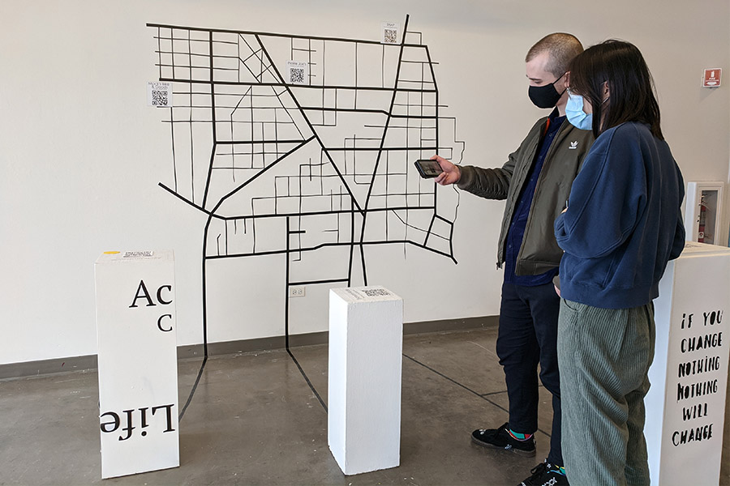

Community Code
Collaborator: Pamela Sue Fox (SNAP), Anne McKeown (Anne’s Irish Knits), Rebecca Abraham (Acute on Chronic), Sam Mack (Mack's Bike and Goods), Aydin Dincer (Prairie Joe's), Valerie Kahan (Art Makers Outpost), Lisa Degliantoni (Evanston Made).
Community Code is a series of interactive stories of small business owners in the Evanston neighborhood. Each story is around 5-10 mins in length for experience and can be accessed by scanning a QR code.

Exhibition view during February 20 - March 28 at Evanston Art Center.